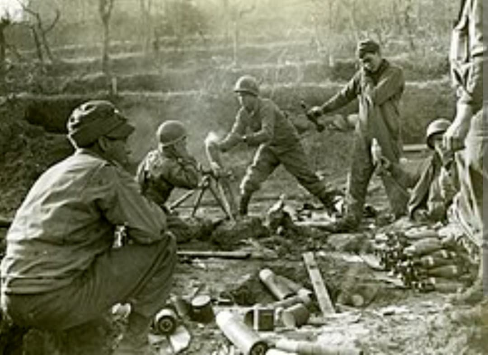
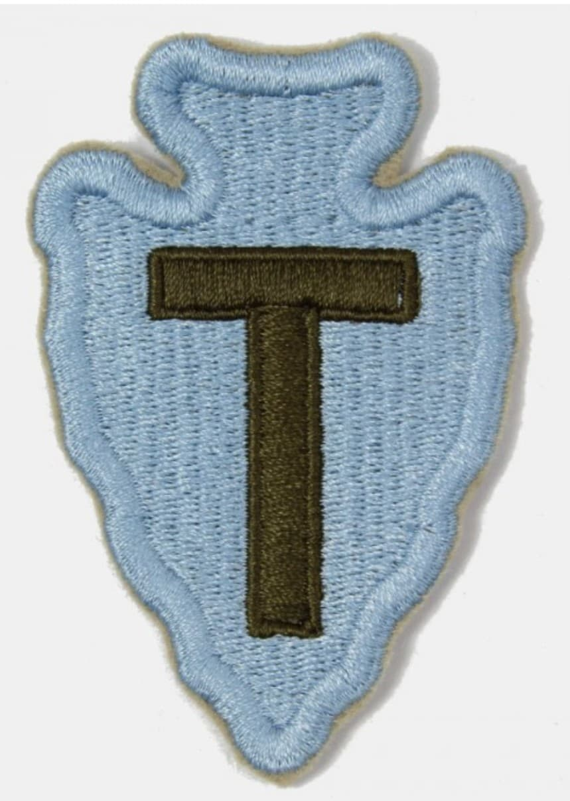
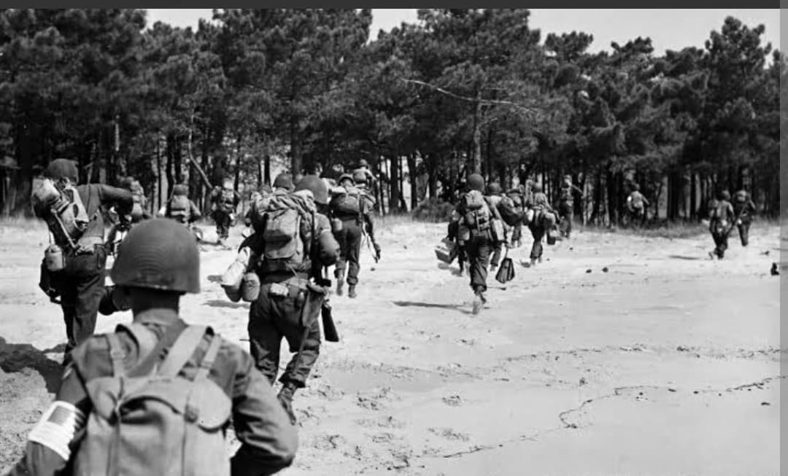

Salerne, l'enfer de la rivière Rapido, le débarquement de Provence et la percée des Vosges

Surnommée la « Texas Division » ou « Arrowhead », la **36th Infantry Division** de la Garde Nationale du Texas est l'une des unités américaines les plus aguerries du théâtre méditerranéen et européen.
Première division américaine à débarquer sur le continent européen en Italie continentale en septembre 1943, elle a traversé près de 400 jours de combat acharné, marqués par des victoires héroïques et de terribles épreuves.
Créée en 1917, la division tire ses effectifs originels du Texas et de l'Oklahoma. Son insigne unique superpose la lettre majuscule **T** (pour Texas) sur une **pointe de flèche comanche** en pierre bleue (symbole de l'Oklahoma).
Réactivée en novembre 1940, la division effectue ses entraînements majeurs au Camp Bowie avant d'être envoyée en Méditerranée sous le commandement du général **Fred L. Walker**.

Le 9 septembre 1943, la 36th Division mène l'assaut de l'**Opération Avalanche** à Salerne. En janvier 1944, elle tente le franchissement dramatique de la rivière **Rapido** face à la ligne Gustave, subissant plus de 2 000 pertes en 48 heures.
Elle se rétablit brillamment lors du débarquement d'Anzio en mai 1944 et participe à la libération de Rome le 4 juin 1944.

Le 15 août 1944, la division débarque en Provence (**Opération Dragoon**) à Saint-Raphaël, remonte le Rhône et bloque la 19e Armée allemande à la **bataille de Montélimar**.
Elle traverse ensuite les Vosges, résiste à l'opération *Nordwind* en Alsace et pénètre en Bavière en 1945, capturant le feld-maréchal von Rundstedt et Hermann Göring.
En 400 jours de combat, la 36th Infantry Division déplore près de **19 500 pertes au combat** (dont 3 130 tués).
Quinze de ses soldats ont reçu la Medal of Honor (l'un des totaux les plus élevés de la guerre). La division a capturé plus de 175 000 prisonniers allemands.
Page du Musée HOP WW2 – Section Unités & Divisions Célèbres